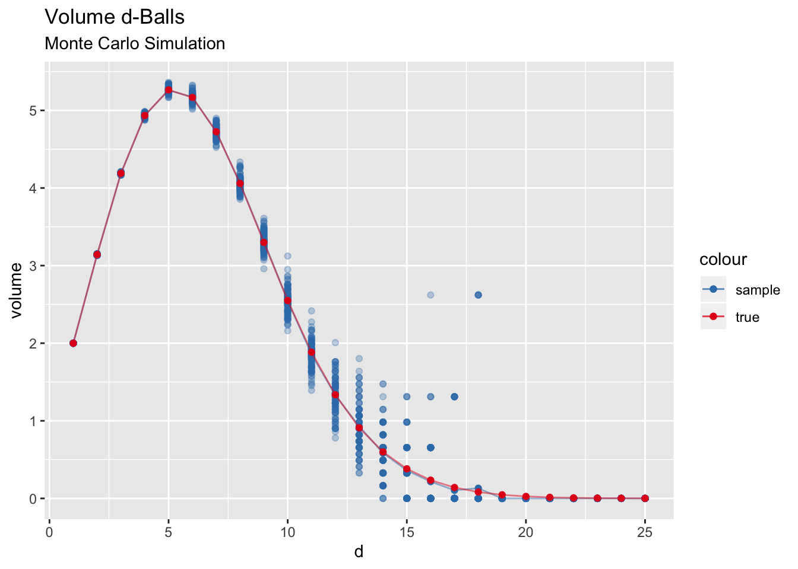
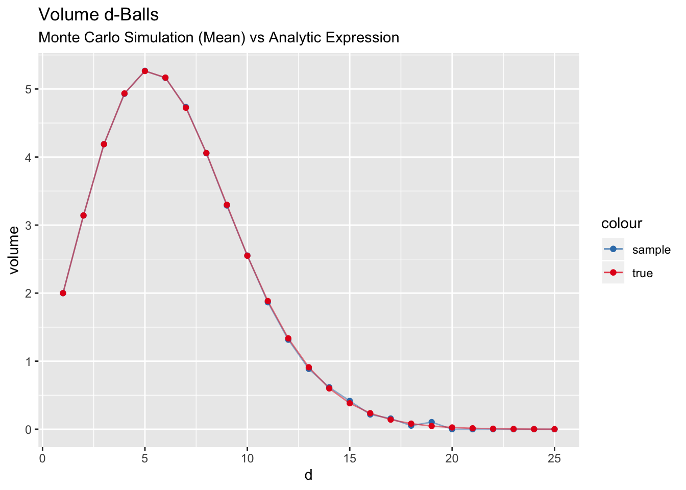

In this notebook we run Monte Carlo simulations to estimate the volume of the \(d\)-ball \[ B^{d}:=\{x \in \mathbb{R}^d : ||x|| \leq 1\}. \] There are many ways to obtain a closed formula for this volume , see for example this Wikipedia article. Here we do it via sampling just for fun!
Main Idea
Consider a square \(A_{d}\subset \mathbb{R}\) centered at the origin with side length \(2\). We estimate the volume of the \(d\)-ball \(B^{d}:=\{x \in \mathbb{R}^d : ||x|| \leq 1\}\subset A^{d}\) by sampling uniformly from \(A\) and computing the proportions of vectors having length less or equal than one. Note that \(\text{vol}(A^{d}) = 2^{d}\).
library(tidyverse)area_square <- function (d) { 2^d }Let us write a function to generate such samples:
# d: dimension.
# n: number os samples.
get_samples_df <- function (d, n) {
map(.x = 1:d,
.f = function(i) {
samples <- runif(n = n, min = -1, max = 1)
tibble(!!str_c("d_", as.character(i)) := samples)
}
) %>% reduce(.f = ~ bind_cols(.x, .y))
}Let us see an example for \(n=2\).
# Get samples.
samples_df <- get_samples_df(d = 2, n = 1E4)
# Compute L2-norm.
norm_2 <- samples_df %>% mutate_all(.funs = ~ .x^2) %>% rowSums()
# Inside the ball condtion.
is_in_ball <- (norm_2 <= 1)
samples_df <- samples_df %>% mutate(is_in_ball = is_in_ball)
# Plot.
samples_df %>%
ggplot(mapping = aes(x = d_1, y = d_2, color = is_in_ball)) +
geom_point(alpha = 0.4) +
scale_color_brewer(palette = "Set1") +
theme(aspect.ratio = 1)
Let us compute the area ratio:
area_square(d = 2)*(sum(samples_df$is_in_ball) / nrow(samples_df))## [1] 3.156Recall that the true area of the \(2\)-ball is \(\pi\), so the estimation is quite close.
Volume Computation
Let us now generalize the above computation for arbitrary dimensions.
compute_vol_ball <- function (d, n) {
samples_df <- get_samples_df(d = d, n = n)
norm_d <- samples_df %>%
mutate_all(.funs = ~ .x^2) %>%
rowSums()
is_in_ball <- norm_d < 1
vol <- 2^(d)*(sum(is_in_ball) / n)
return(vol)
}Simulation
Next, we write a function to run the simulation. We do this as a function of the dimension \(1\leq d \leq d_{max}.\)
# N: Number of iteration per dimension.
run_simulation <- function (d_max, n, N) {
simulation_list <- map(.x = 1:d_max, .f = function (d) {
map_dbl(.x = 1:N, .f = ~ compute_vol_ball(d = d, n = n))
})
simulation_df <- tibble(volume = simulation_list) %>%
rowid_to_column(var = "d") %>%
unnest(cols = volume)
return(simulation_df)
}We run the simulation:
# Simulation parameters.
d_max <- 25
n <- 1E5
N <- 100
# Run simulation.
simulation_df <- run_simulation(d_max = d_max, n = n, N = N)
# Get simulation mean.
mean_simulation_df <- simulation_df %>%
group_by(d) %>%
summarise(volume = mean(volume))The analytic expression for the volume is1
\[ \text{vol}(B^{d}) = \frac{\pi^{d/2}}{\Gamma(d/2 + 1)} \] where \(\Gamma\) denotes the special gamma function.
# Analytic expresion for the volume of B^d.
vol_d_ball <- function (d) {
pi^{(d)/2} / gamma(d/2 + 1)
}
# Compute it for a sequence of dimensions.
vol_df <- tibble(
d = 1:d_max ,
volume_true = map_dbl(.x = 1:d_max, .f = vol_d_ball)
)Results
Let us compare the simulation results with the analytic solution:
set1_pal <- RColorBrewer::brewer.pal(n = 9, name = "Set1")
ggplot() +
geom_point(data= simulation_df, mapping = aes(x = d, y = volume), color = set1_pal[2], alpha = 0.3) +
geom_point(data = mean_simulation_df, mapping = aes(x = d, y = volume, color="sample")) +
geom_line(data = mean_simulation_df, mapping = aes(x = d, y = volume, color="sample"), alpha = 0.5) +
geom_point(data = vol_df, mapping = aes(x = d, y = volume_true, color = "true")) +
geom_line(data = vol_df, mapping = aes(x = d, y = volume_true, color = "true"), alpha = 0.5) +
labs(title = "Volume d-Balls",subtitle = "Monte Carlo Simulation", xlabel = "dimension") +
scale_color_manual(values=c(set1_pal[2], set1_pal[1])) +
scale_y_continuous(breaks = scales::pretty_breaks())
ggplot() +
geom_point(data = mean_simulation_df, mapping = aes(x = d, y = volume, color="sample")) +
geom_line(data = mean_simulation_df, mapping = aes(x = d, y = volume, color="sample"), alpha = 0.5) +
geom_point(data = vol_df, mapping = aes(x = d, y = volume_true, color = "true")) +
geom_line(data = vol_df, mapping = aes(x = d, y = volume_true, color = "true"), alpha = 0.5) +
labs(title = "Volume d-Balls",subtitle = "Monte Carlo Simulation (Mean) vs Analytic Expression", xlabel = "dimension") +
scale_color_manual(values=c(set1_pal[2], set1_pal[1])) +
scale_y_continuous(breaks = scales::pretty_breaks())
It is very interesting to see that the ball in dimension \(d=5\) has the biggest volume and then the volume tends to zero. But why? Does this make sense? Well, this plot is actually misleading as we are comparing apples with oranges since we are comparing different units. That is, we are comparing meters (\(m\)) with square meters (\(m^2\)) and so on.
We can compare the ratio of the volumes of each ball and the corresponding squares, i.e. \(\text{vol}(B^2)/\text{vol}(A^d)\) which does not have any units.
vol_df %>%
mutate(vol_prop = volume_true / 2^(d)) %>%
ggplot(mapping = aes(x = d, y = vol_prop)) +
geom_point() +
geom_line(alpha = 0.5) +
labs(title = "Ratio d-Ball/d-Square", y="")
Note that this ratio is always decreasing and converges to zero. This is related to the Curse of dimensionality. See Exploring the Curse of Dimensionality - Part I. and Exploring the Curse of Dimensionality - Part II.
Remark If we define the diameter of a set \(S\subset \mathbb{R}^{d}\)as \[ \text{diam}(S):= \sup_{x, y\in S}||x - y|| \] Then \(\text{diam}(B^{d})=2\), where the \(\sup\) is attained when considering two antipodal points, and \(\text{diam}(A^{d})=2\sqrt{d}\), where again the \(\sup\) by considering the points \((-1, -1, \cdots, -1)\) and \((1, 1, \cdots, 1)\).